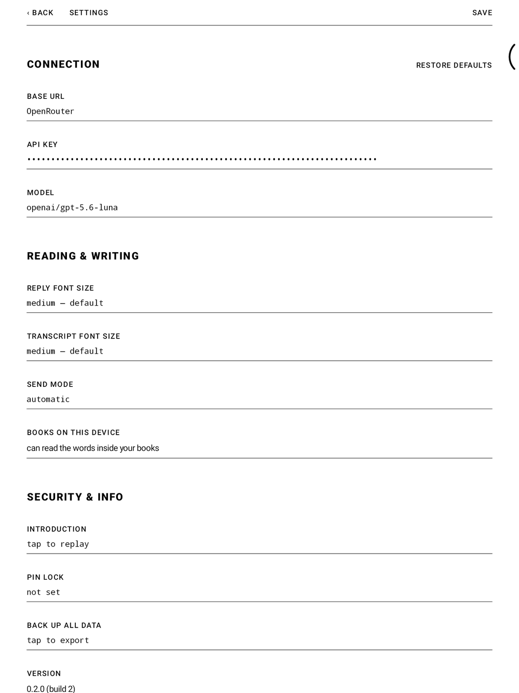
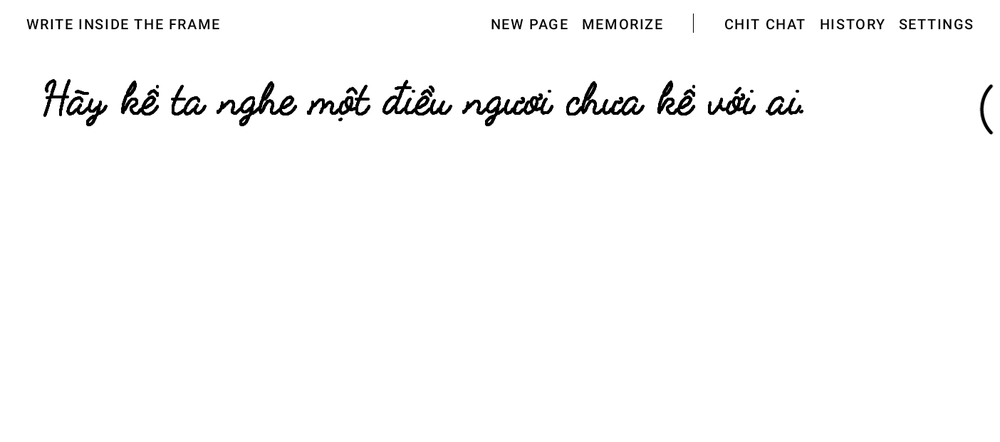
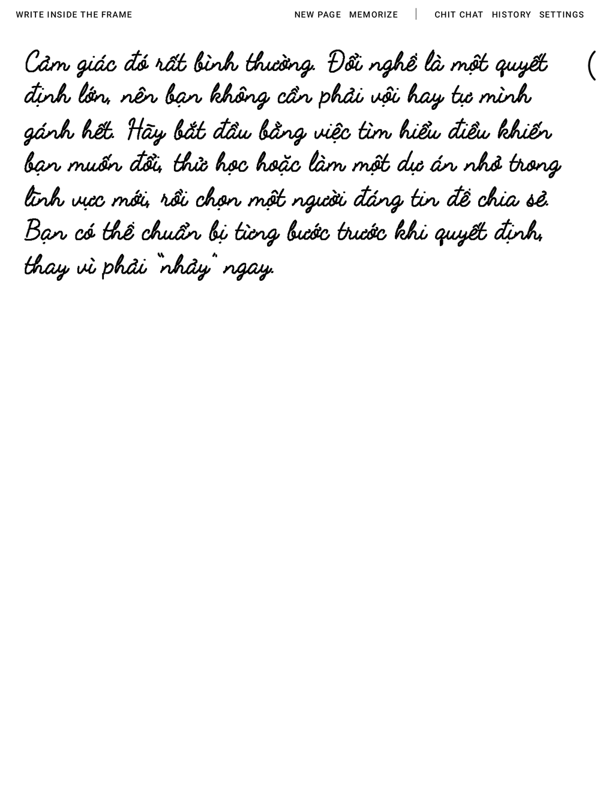
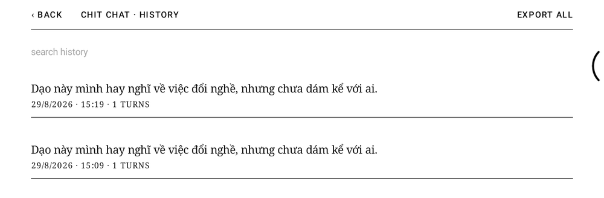

User guide
The first pages, step by step.
Five quiet steps: install the app, hand it a key, and write the first line. Everything below was captured on a real BOOX tablet.
Install the app.
On your BOOX tablet, open the browser and download the APK. When Android asks, allow installs from the browser, then open the downloaded file and confirm.
- Works on BOOX tablets running Android 10 or newer.
- The app is free and open source — read the code.
- Nothing is collected: your pages stay on the device, and your writing goes only to the AI provider you configure next.
Hand it a key.
RiddleBoox ships without an AI key on purpose — the companion talks to whichever OpenAI-compatible provider you choose. Open SETTINGS in the top-right corner and fill in three fields:
- Base URL — where your provider lives; OpenRouter (
https://openrouter.ai/api) is the default. - API key — your own key from that provider. It is stored encrypted, on your device, and goes nowhere else.
- Model — any vision-capable model; the page travels as an image, so the model must be able to see.
Tap SAVE, and the page works the moment the key is in.

Write the first line.
The companion opens each page with a line of its own. Just write beneath it — with the pen, anywhere inside the frame. Spelling, hesitation, crossed-out words: all of it is fine.
When you lift the pen and stay quiet for a moment, the page takes that as “I'm done for now” and hands your words over — exactly as they look, ink and all.

Let the reply come back.
Your ink dissolves, the page thinks, and the answer returns in handwriting — on the same paper, in the same rhythm. Nothing else appears: no chat bubbles, no send button, no keyboard.
Keep writing under the reply to continue the thread, or tap NEW CONVERSATION to start a fresh one. Every finished conversation is kept in HISTORY, so a thought can be picked up days later.

Find your way around.
The whole interface is one quiet row above the page:
- NEW CONVERSATION — finish this thread and open a blank one.
- MEMORIZE — ask the companion to keep what matters from the conversation in its long-term memory.
- The name in the middle — your current companion. Tap it to switch agents or write your own: a friend, a tutor, a reading companion.
- HISTORY — every finished conversation, searchable, resumable.
- SETTINGS — key, model, handwriting size, send mode, and a PIN lock if the diary should stay yours.
The row keeps to itself: it says nothing while the page is simply waiting for ink, and while the companion is answering it steps aside for what it is doing and a single STOP.

If the page stays quiet.
- No key yet? Write anyway. The page still takes ink, and the companion answers in its own hand to say where the key goes — Settings.
- No reply? Check Wi-Fi first, then Settings — the base URL and key must belong to the same provider, and the model must support images.
- Reply in the wrong language? The companion follows your writing. Write in the language you want answered.
- Want a clean slate? NEW CONVERSATION ends the thread; deleting a conversation in HISTORY removes it for good.